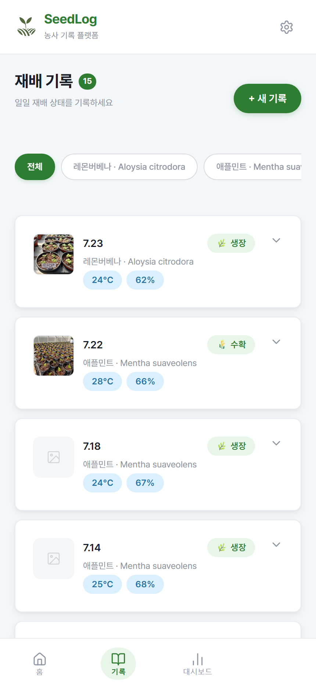
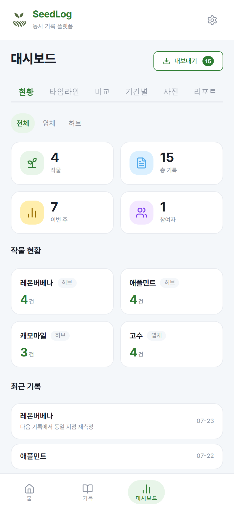
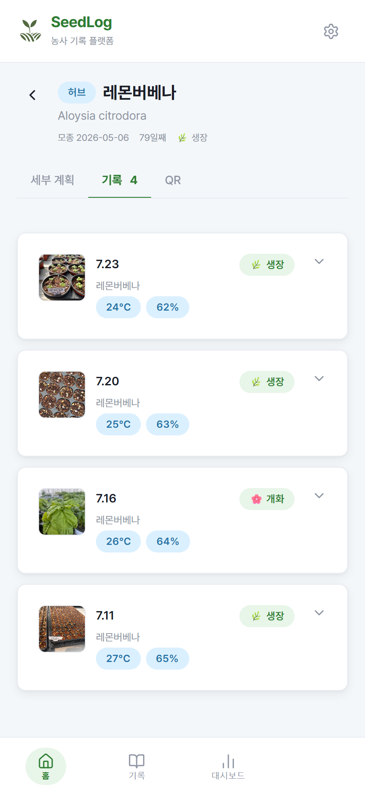
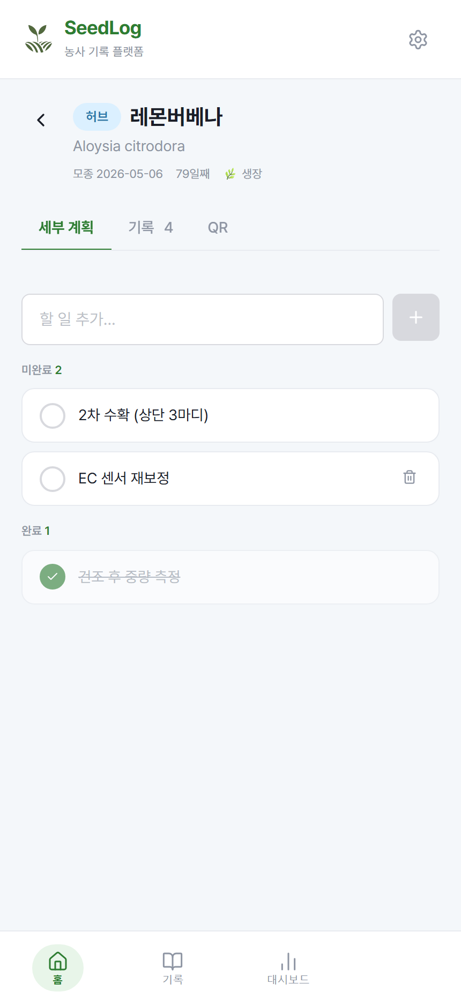
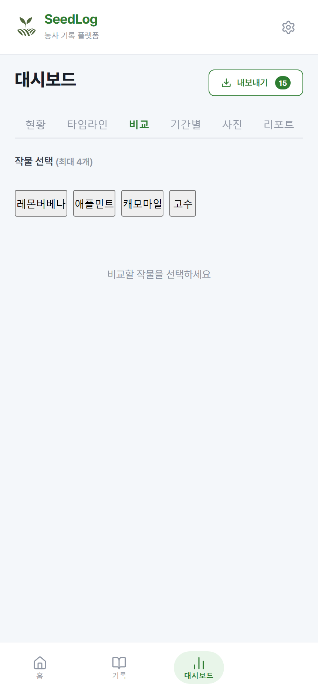
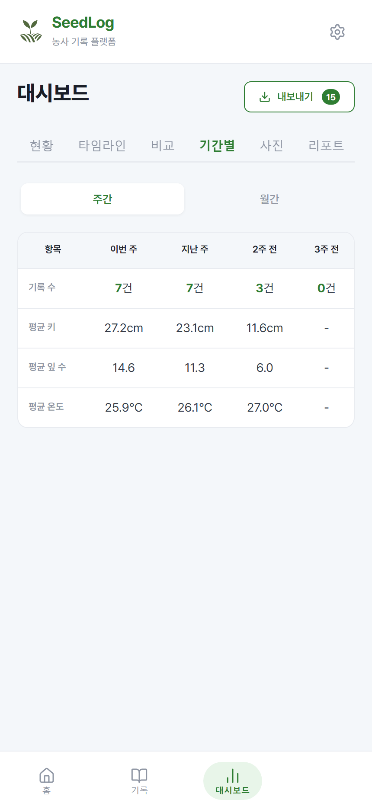
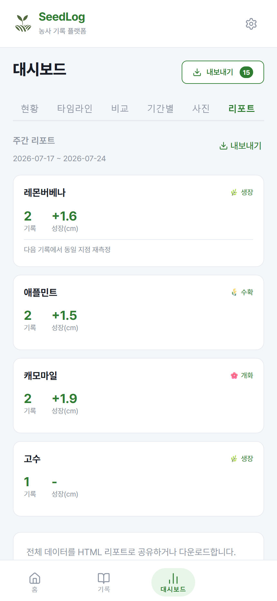

수직농장을 직접 운영하며 만든 농업 데이터 기록 웹앱 — 그리고 실제 농가가 쓰는 서비스.


01 The Season
한 시즌이 끝나면 남는 게 없다는 게 문제였어요.
SeedLog는 수직농장을 직접 운영하면서 시작했어요. 농사는 시즌 단위로 끊기는데, 시즌이 끝나면 다음에 참고할 게 머릿속밖에 없었어요. 재배 기록·환경값·수확량을 한 곳에서 이어 보고 싶었는데 딱 맞는 도구가 없었어요.
기획·디자인·개발·배포까지 혼자 했고, 지금은 저 말고 다른 농가도 쓰는 서비스가 됐어요.
02 Scattered
기록이 없던 게 아니라, 세 군데에 나뉘어 있었어요.
재배 일지는 메모장에, 환경 데이터는 엑셀에, 수확량은 머릿속에 있었어요. 각각은 멀쩡한데 같은 작물의 같은 시기를 나란히 놓고 볼 수가 없었어요.
"저번 레몬버베나는 몇 주째에 이만큼 컸더라"를 확인하려면 세 곳을 뒤져야 했어요. 그러다 보면 안 찾게 되고, 안 찾으니 매 시즌이 처음이 됐어요.
데이터가 없는 게 문제가 아니었어요. 한 곳에 쌓고 연결해서 볼 수 있는 도구가 없었던 거예요.
03 The Timeline
기록의 단위를 날짜가 아니라 '작물'로 잡았어요.
날짜순으로 쌓으면 어제 뭘 했는지는 알아도 이 작물이 지금까지 어떻게 컸는지는 안 보여요. 그래서 기록을 작물에 붙였어요. 파종·정식일을 기준으로 경과일이 세어지고, 그 아래로 날짜별 기록이 사진과 함께 쌓여요.
작물 하나에 세부 계획·기록·QR이 같이 붙어서, 심은 것부터 수확까지 한 줄로 따라갈 수 있어요.


04 The Read
보는 방식을 여섯 개로 나눈 건, 여섯 번 필요했기 때문이에요.
현황 / 타임라인 / 비교 / 기간별 / 사진 / 리포트. 처음부터 여섯 개를 설계한 게 아니라, 쓰다가 "이건 이렇게 보고 싶은데"가 생길 때마다 하나씩 붙였어요.
비교 탭은 두 작물을 나란히 놓고 싶어서, 기간별 탭은 주차별 평균 키·잎 수·온도를 보고 싶어서 생겼어요. 만들어놓고 안 쓰는 화면이 하나도 없는 이유예요.



기간별 탭은 주차별 평균 키·잎 수·온도를 나란히 놓는다. 한 주의 기록이 다음 시즌의 기준선이 된다.
05 Under the Hood
남이 쓰기 시작하는 순간 필요해진 건 기능이 아니라 격리였어요.
혼자 쓸 땐 로그인도 필요 없었어요. 그런데 다른 농가가 쓰겠다고 하는 순간, 남의 기록이 절대 보이면 안 된다는 조건이 생겼어요.
React + Vite + Supabase로 만들면서 인증과 데이터 모델을 다시 짜고 RLS(행 수준 보안)를 걸었어요. 기능을 늘리는 것보다 이 작업이 훨씬 중요했어요.
06 Still Growing
혼자 쓰려고 만들었는데, 다른 농가도 쓰기 시작했어요.
만드는 것보다 계속 쓰게 되는 것이 훨씬 어려워요. SeedLog는 지금도 실제 농장에서 돌아가고, 저 말고 다른 농가도 가입해 자기 기록을 쌓고 있어요.
돌아보면 쓰면서 바뀐 기능이 처음 설계한 것보다 나은 경우가 더 많았어요. 실제로 굴려보지 않으면 뭘 잘못 설계했는지 알 방법이 없다는 걸 이 서비스에서 배웠어요.